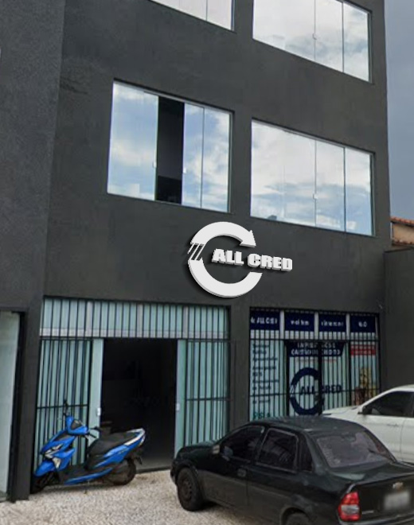

Pronto para ter crédito com as melhores condições?
Simule grátis agora ou fale com um consultor — sem compromisso.
Chame no Whatsapp
15 anos
de mercado
Há mais de 15 anos, a Allcred existe com um propósito claro: oferecer as melhores condições de crédito consignado para aposentados, pensionistas e servidores públicos de todo o Estado de São Paulo, com o atendimento próximo e humano que cada pessoa merece.

A Allcred nasceu em Franca, no interior de São Paulo, com uma missão simples e poderosa: democratizar o acesso ao crédito de qualidade para quem sempre cumpriu suas obrigações: aposentados, pensionistas e servidores públicos.
Fundada com a convicção de que atendimento humanizado e taxas justas podem coexistir, a empresa cresceu ao longo de mais de 20 anos construindo relacionamentos de longa data com cada cliente. Aqui, você não é um número de contrato, é uma pessoa com uma história e um objetivo.
Como correspondente bancário autorizado pelo Banco Central do Brasil, a Allcred opera com toda a segurança e credibilidade que um produto financeiro exige, aliada à proximidade de uma empresa local que conhece a realidade do seu cliente.
Fale coma a genteOferecer soluções de crédito consignado com as melhores taxas do mercado, atendimento humanizado e total transparência, para que cada cliente tome a melhor decisão financeira com confiança e segurança.
Ser a promotora de crédito mais respeitada e recomendada do Estado de São Paulo, reconhecida pela excelência no atendimento a aposentados, pensionistas e servidores públicos.
Transparência em cada etapa. Respeito por cada pessoa. Responsabilidade com os dados e a vida financeira de quem confia em nós. E um compromisso inabalável com o atendimento próximo e sem pressa.
Não somos um banco digital sem rosto. Somos uma equipe local, presente, que atende você com calma e respeito.
Simule grátis agora ou fale com um consultor — sem compromisso.
Chame no Whatsapp